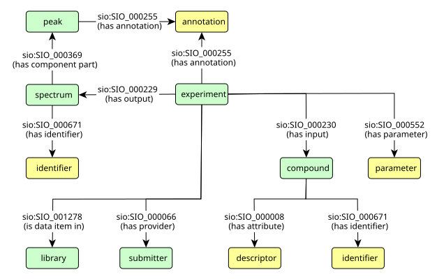

To fully represent the data, we opted for a general upper-level ontology, namely the Semanticscience Integrated Ontology (SIO). This ontology, which specializes in biomedical research and knowledge discovery, provides users with general descriptions of objects, processes, and their attributes. Using SIO, each entry of a mass spectrum database is represented as an experiment, which generates a mass spectrum from an input compound.
Attributes in the SIO ontology represent independent entities, enabling types from other ontologies to be assigned. Specifically, we assigned types from the PSI–MS controlled vocabulary for attributes related to mass spectrometry, and from the Chemical Information Ontology (CHEMINF) (Hastings et al. 2011) for attributes related to compound properties.
Another advantage of the SIO ontology is that it is used by the PubChemRDF and ChEMBL datasets, so representing the selected mass spectrum databases in this way seamlessly integrates with the overarching data model used in IDSM.
In addition to the SIO ontology, the following ontologies are employed to represent selected datasets: the Units of Measurement Ontology (UO) (Rijgersberg et al. 2011) for units of measured values; Dublin Core Metadata Initiative Metadata Terms (DCMI Usage Board 2020) to express basic information about mass spectrum libraries and experiments; the vCard ontology (W3C 2014b) to express information about submitters; and the Simple Knowledge Organization System (SKOS) ontology (W3C 2009) to cross-link entities from different datasets.
The prefixes related to the ontologies used are as follows:
| prefix | namespace |
|---|---|
| rdf | http://www.w3.org/1999/02/22-rdf-syntax-ns# |
| rdfs | http://www.w3.org/2000/01/rdf-schema# |
| xsd | http://www.w3.org/2001/XMLSchema# |
| sio | http://semanticscience.org/resource/ |
| obo | http://purl.obolibrary.org/obo/ |
| dcterms | http://purl.org/dc/terms/ |
| vcard | http://www.w3.org/2006/vcard/ns# |
| skos | http://www.w3.org/2004/02/skos/core# |
A record from a source mass spectroscopy dataset is represented as the mass spectrometry experiment (class sio:SIO_001180). The measured compound (class sio:SIO_011125) is related to the experiment as its input (property sio:SIO_000230). Similarly, the mass spectrum (class obo:MS_1000294) is related to the experiment as its output (property sio:SIO_000229). The mass spectrum entity refers (via property sio:SIO_000300) to the mass spectrum literal containing its own measured data, that is, the intensities of the mass-to-charge ratios.
The experiment, input compound, and output mass spectrum contain attributes encoded as separate entities. Each attribute has a type (property rdf:type) and a value (property sio:SIO_000300). Where necessary, the attribute also has a unit (property sio:SIO_000221) in addition to the value.
The experiment parameters, such as ion mode or collision energy, are encoded as attributes of appropriate types derived from the PSI–MS vocabulary and linked to the experiment (property sio:SIO_000553). Attributes representing chemical qualities and compound identifiers are categorized based on appropriate types from the CHEMINF ontology and linked to a compound (properties sio:SIO_000011 and sio:SIO_000672 respectively). In the case of the mass spectrum, its SPLASH identifier is represented in a similar way.
If the original record contains annotations of peaks, each annotated peak is represented as a separate entity (class obo:MS_1000231) and connected to the spectrum as its component part (property sio:SIO_000313) on a given mass-to-charge ratio position (property sio:SIO_000056).
Annotations of experiments (called tags in the MoNA database) and peaks are encoded as attributes of the type annotation (class sio:SIO_001166) and related to the corresponding entity (property sio:SIO_000254).
To preserve information about the origins of the records, the experiments are organized (property sio:SIO_001278) into datasets (class sio:SIO_000089) based on their original sources. Each experiment is also connected (property sio:SIO_000066) to a person (class vcard:Individual) who submits the corresponding original record into the original database.
The basic relationships between main entities are expressed in the following graph:

| property | name | value |
|---|---|---|
| rdf:type | type | sio:SIO_001180 (mass spectrometry experiment) |
| sio:SIO_000230 | has input | instance of compound |
| sio:SIO_000229 | has output | instance of spectrum |
| sio:SIO_000066 | has provider | instance of submitter |
| sio:SIO_001278 | is data item in | instance of library |
| sio:SIO_000255 | has annotation | instance of annotation |
| sio:SIO_000552 | has parameter | instance of parameter |
| dcterms:created | created | xsd:date literal |
| dcterms:dateAccepted | curated | xsd:date literal |
| dcterms:modified | updated | xsd:date literal |
| property | name |
|---|---|
| rdf:type | type |
| sio:SIO_000300 | has value |
| sio:SIO_000221 | has unit |
| parameter | type | value class | unit class |
|---|---|---|---|
| ms level | obo:MS_1000511 | xsd:int | no unit |
| ionization mode | obo:MS_1000129 (negative) obo:MS_1000130 (positive) | no value | no unit |
| ionization type |
obo:MS_1000070 (APCI) obo:MS_1000071 (CI) obo:MS_1000073 (ESI) obo:MS_1000074 (FAB) obo:MS_1000075 (MALDI) obo:MS_1000258 (FI) obo:MS_1000389 (EI) obo:MS_1000398 (nanoES) | no value | no unit |
| precursor type | obo:MS_1002813 | xsd:string | no unit |
| precursor mz | obo:MS_1000744 | xsd:float | obo:MS_1000040 (mz) |
| instrument type | obo:MS_1000463 | xsd:string | no unit |
| instrument model | obo:MS_1000031 | xsd:string | no unit |
| retention time | obo:MS_1000894 | xsd:float | obo:UO_0000010 (second) obo:UO_0000031 (minute) or none |
| collision energy | obo:MS_1000045 | xsd:float | obo:UO_0000218 (volt) obo:UO_0000248 (kilovolt) obo:UO_0000266 (electronvolt) or none |
| collision energy ramp | obo:MS_1002013 (start) obo:MS_1002014 (end) | xsd:float | obo:UO_0000218 (volt) obo:UO_0000266 (electronvolt) or none |
| normalized collision energy | obo:MS_1000138 | xsd:float | obo:UO_0000190 (ratio unit) |
| normalized collision energy ramp | obo:MS_1002218 (start) obo:MS_1002219 (end) | xsd:float | obo:UO_0000190 (ratio unit) |
| property | name | value |
|---|---|---|
| rdf:type | type | sio:SIO_011125 (molecule) ClassyFire class ChEBI class |
| skos:closeMatch | related to | MeSH class |
| sio:SIO_000231 | is input in | instance of experiment |
| sio:SIO_000008 | has attribute | instance of desctiptor |
| sio:SIO_000671 | has identifier | instance of identifier |
| property | name |
|---|---|
| rdf:type | type |
| sio:SIO_000300 | has value |
| sio:SIO_000221 | has unit |
| descriptor name | descriptor class | descriptor value class | descriptor unit class |
|---|---|---|---|
| molfile | sio:SIO_011120 | xsd:string | no unit |
| name | sio:CHEMINF_000043 | xsd:string | no unit |
| InChI | sio:CHEMINF_000113 | xsd:string | no unit |
| InChIKey | sio:CHEMINF_000059 | xsd:string | no unit |
| molecular formula | sio:CHEMINF_000042 | xsd:string | no unit |
| SMILES | sio:CHEMINF_000018 | xsd:string | no unit |
| exact mass | sio:CHEMINF_000217 | xsd:float | obo:UO_0000055 (molar mass) |
| monoisotopic mass | sio:CHEMINF_000218 | xsd:float | obo:UO_0000055 (molar mass) |
| property | name |
|---|---|
| rdf:type | type |
| sio:SIO_000300 | has value |
| identifier name | identifier class |
|---|---|
| CAS registry number | sio:CHEMINF_000446 |
| HMDB identifier | sio:CHEMINF_000408 |
| ChEBI identifier | sio:CHEMINF_000407 |
| ChemSpider identifier | sio:CHEMINF_000405 |
| KEGG identifier | sio:CHEMINF_000409 |
| LipidMaps identifier | sio:CHEMINF_000564 |
| PubChem compound identifier (CID) | sio:CHEMINF_000140 |
| PubChem substance identifier (SID) | sio:CHEMINF_000141 |
| property | name | value |
|---|---|---|
| rdf:type | type | obo:MS_1000294 (mass spectrum) obo:MS_1000579 (MS1 spectrum) obo:MS_1000580 (MSn spectrum) |
| sio:SIO_000232 | is output of | instance of experiment |
| sio:SIO_000671 | has identifier | instance of identifier |
| sio:SIO_000369 | has component part | instance of peak |
| sio:SIO_000300 | has value | ms:spectrum literal |
| property | name |
|---|---|
| rdf:type | type |
| sio:SIO_000300 | has value |
| identifier name | identifier class |
|---|---|
| SPLASH key | obo:MS_1002599 |
| property | name | value |
|---|---|---|
| rdf:type | type | obo:MS_1000231 (peak) |
| sio:SIO_000313 | is component part of | instance of spectrum |
| sio:SIO_000255 | has annotation | instance of annotation |
| sio:SIO_000056 | position | xsd:float literal |
| property | name | value |
|---|---|---|
| rdf:type | type | sio:SIO_001166 (annotation) |
| sio:SIO_000254 | is annotation of | instance of experiment or peak |
| sio:SIO_000300 | has value | xsd:string literal |
| property | name | value |
|---|---|---|
| rdf:type | type | sio:SIO_000089 (dataset) |
| sio:SIO_001277 | has data item | instance of experiment |
| dcterms:title | title | xsd:string literal |
| dcterms:description | description | xsd:string literal |
| property | name | value |
|---|---|---|
| rdf:type | type | vcard:Individual |
| sio:SIO_000064 | is provider of | instance of experiment |
| vcard:given-name | first name | xsd:string literal |
| vcard:family-name | last name | xsd:string literal |
| vcard:hasEmail | email address | email IRI |
| vcard:organization-name | insttitution | xsd:string literal |
Calculate ‘cosine similarity score’ between two spectra.
ms:cosineGreedy(spectrum 1, spectrum 2, tolerance, mz power, intensity power)
The cosine score aims at quantifying the similarity between two mass spectra. The score is calculated by finding best possible matches between peaks of two spectra. Two peaks are considered a potential match if their m/z ratios lie within the given ‘tolerance’. The underlying peak assignment problem is here solved in a ‘greedy’ way. This can perform notably faster, but does occasionally deviate slightly from a fully correct solution (as with the Hungarian algorithm, see Hungarian Cosine). In practice this will rarely affect similarity scores notably, in particular for smaller tolerances. The implementation of this function (as well as this description) was taken from the matchms project.
The function has these optional parameters:
Calculate ‘cosine similarity score’ between two spectra (using Hungarian algorithm).
ms:cosineHungarian(spectrum 1, spectrum 2, tolerance, mz power, intensity power)
The cosine score aims at quantifying the similarity between two mass spectra. The score is calculated by finding best possible matches between peaks of two spectra. Two peaks are considered a potential match if their m/z ratios lie within the given ‘tolerance’. The underlying peak assignment problem is here solved using the Hungarian algorithm. This can perform notably slower than the ‘greedy’ implementation in Greedy Cosine, but does represent a mathematically proper solution to the problem. The implementation of this function (as well as this description) was taken from the matchms project.
The function has these optional parameters:
Calculate ‘modified cosine score’ between mass spectra.
ms:modifiedCosine(spectrum 1, spectrum 2, shift, tolerance, mz power, intensity power)
The modified cosine score aims at quantifying the similarity between two mass spectra. The score is calculated by finding best possible matches between peaks of two spectra. Two peaks are considered a potential match if their m/z ratios lie within the given ‘tolerance’, or if their m/z ratios lie within the tolerance once a mass-shift is applied. The mass shift is simply the difference in precursor-m/z between the two spectra. See Watrous et al. (PNAS, 2012) for further details. The implementation of this function (as well as this description) was taken from the matchms project.
The function has these optional parameters:
PREFIX sio: <http://semanticscience.org/resource/>
PREFIX ms: <http://bioinfo.uochb.cas.cz/rdf/v1.0/ms#>
# select compounds whose spectra are similar to a given spectrum
SELECT ?COMPOUND ?SCORE WHERE
{
# bind the spectrum query into variable ?MSQUERY
BIND("""39:5 40:6 44:1 63:6 76:6 91:7 113:6
114:2 115:5 142:3 170:3 171:7 182:6
210:100 212:2"""^^ms:spectrum AS ?MSQUERY)
# select all spectra and corresponding input compounds
?EXPERIMENT sio:SIO_000230 ?COMPOUND. # has input
?EXPERIMENT sio:SIO_000229 ?SPECTRUM. # has output
?SPECTRUM sio:SIO_000300 ?MSVALUE. # has value
# compute similarities between the spectrum query and the selected spectra
BIND(ms:cosineHungarian(?MSQUERY, ?MSVALUE) as ?SCORE)
# filter out results with similarity scores less than 0.85
FILTER(?SCORE >= 0.85)
}
ORDER BY DESC(?SCORE)
PREFIX sio: <http://semanticscience.org/resource/>
PREFIX sachem: <http://bioinfo.uochb.cas.cz/rdf/v1.0/sachem#>
# select spectra of compounds that contain a given substructure
SELECT ?COMPOUND ?SPECTRUM ?MSVALUE WHERE
{
# search for compounds containing the substructure
?COMPOUND sachem:substructureSearch [
sachem:query "CC(=O)OC1=CC=CC=C1C(=O)O";
sachem:tautomerMode sachem:inchiTautomers ].
# select mass spectra of the compounds found
?EXPERIMENT sio:SIO_000230 ?COMPOUND. # has input
?EXPERIMENT sio:SIO_000229 ?SPECTRUM. # has output
?SPECTRUM sio:SIO_000300 ?MSVALUE. # has value
}
PREFIX sio: <http://semanticscience.org/resource/>
PREFIX bao: <http://www.bioassayontology.org/bao#>
PREFIX obo: <http://purl.obolibrary.org/obo/>
PREFIX protein: <http://rdf.ncbi.nlm.nih.gov/pubchem/protein/>
PREFIX vocab: <http://rdf.ncbi.nlm.nih.gov/pubchem/vocabulary#>
PREFIX skos: <http://www.w3.org/2004/02/skos/core#>
# select spectra of compounds that were tested positive against a given target
SELECT DISTINCT ?COMPOUND ?SPECTRUM ?MSVALUE WHERE
{
# select mass spectra of compounds
?EXPERIMENT sio:SIO_000230 ?COMPOUND. # has input
?EXPERIMENT sio:SIO_000229 ?SPECTRUM. # has output
?SPECTRUM sio:SIO_000300 ?MSVALUE. # has value
# select pubchem equivalents of the compounds
?COMPOUND skos:closeMatch ?PUBCHEM_COMPOUND.
# limit them to those that were tested positive against the target
?BIOASSAY bao:BAO_0000209 ?MEASUREGROUP. # has measure group
?MEASUREGROUP obo:RO_0000057 protein:ACCQ9UPY5. # has participant
?MEASUREGROUP obo:OBI_0000299 ?ENDPOINT. # has specified output
?ENDPOINT vocab:PubChemAssayOutcome vocab:active.
?ENDPOINT obo:IAO_0000136 ?SUBSTANCE. # is about
?SUBSTANCE sio:CHEMINF_000477 ?PUBCHEM_COMPOUND. # has normalized counterpart
}
PREFIX sio: <http://semanticscience.org/resource/>
PREFIX bao: <http://www.bioassayontology.org/bao#>
PREFIX obo: <http://purl.obolibrary.org/obo/>
PREFIX protein: <http://rdf.ncbi.nlm.nih.gov/pubchem/protein/>
PREFIX vocab: <http://rdf.ncbi.nlm.nih.gov/pubchem/vocabulary#>
PREFIX skos: <http://www.w3.org/2004/02/skos/core#>
PREFIX ms: <http://bioinfo.uochb.cas.cz/rdf/v1.0/ms#>
# select spectra similar to spectra of compounds tested positive against a given target
SELECT DISTINCT ?SPECTRUM ?MSVALUE WHERE
{
# select spectra of compounds that were tested positive against the target
{
SELECT DISTINCT ?MSQUERY WHERE
{
# select mass spectra of compounds
?EXPERIMENT sio:SIO_000229 ?SPECTRUM. # has input
?EXPERIMENT sio:SIO_000230 ?COMPOUND. # has output
?SPECTRUM sio:SIO_000300 ?MSQUERY. # has value
# select pubchem equivalents of the compounds
?COMPOUND skos:closeMatch ?PUBCHEM_COMPOUND. # has value
# limit them to those that were tested positive against the target
?BIOASSAY bao:BAO_0000209 ?MEASUREGROUP. # has measure group
?MEASUREGROUP obo:RO_0000057 protein:ACCQ9UPY5. # has participant
?MEASUREGROUP obo:OBI_0000299 ?ENDPOINT. # has specified output
?ENDPOINT vocab:PubChemAssayOutcome vocab:active.
?ENDPOINT obo:IAO_0000136 ?SUBSTANCE. # is about
?SUBSTANCE sio:CHEMINF_000477 ?PUBCHEM_COMPOUND. # has normalized counterpart
}
}
# select all mass spectra
?SPECTRUM sio:SIO_000300 ?MSVALUE.
# compute similarities between the spectrum queries and the selected spectra
BIND(ms:cosineGreedy(?MSQUERY, ?MSVALUE) as ?SCORE)
# filter out results with similarity scores less than 0.85
FILTER(?SCORE >= 0.85)
}
PREFIX sio: <http://semanticscience.org/resource/>
PREFIX chebi: <http://purl.obolibrary.org/obo/chebi/>
PREFIX sachem: <http://bioinfo.uochb.cas.cz/rdf/v1.0/sachem#>
PREFIX rdfs: <http://www.w3.org/2000/01/rdf-schema#>
PREFIX rdf: <http://www.w3.org/1999/02/22-rdf-syntax-ns#>
PREFIX rh: <http://rdf.rhea-db.org/>
PREFIX CHEBI: <http://purl.obolibrary.org/obo/CHEBI_>
# select mass spectra of compounds that occurre in reactions which involves CHEBI:29985
SELECT ?COMPOUND ?SPECTRUM WHERE
{
# use Rhea to select compounds occurring in reactions in which CHEBI:29985 occurs
SERVICE <https://sparql.rhea-db.org/sparql>
{
SELECT DISTINCT ?CHEBI WHERE
{
?rhea rdfs:subClassOf rh:Reaction .
?rhea rh:side/rh:contains/rh:compound ?compound .
?rhea rh:side/rh:contains/rh:compound ?compound1 .
?compound (rh:chebi|(rh:reactivePart/rh:chebi)|(rh:underlyingChebi/rh:chebi)) CHEBI:29985.
?compound1 rh:chebi ?CHEBI
}
}
# select InChI descriptors of the ChEBI compounds found
?CHEBI chebi:inchi ?INCHI.
# select all spectra and corresponding input compounds
?EXPERIMENT sio:SIO_000230 ?COMPOUND. # has input
?EXPERIMENT sio:SIO_000229 ?SPECTRUM. # has output
?SPECTRUM sio:SIO_000300 ?MSVALUE. # has value
# filter out compounds having the propper InChI descriptors
?COMPOUND sio:SIO_000008 ?DESCRIPTOR. # has attribute
?DESCRIPTOR rdf:type sio:CHEMINF_000113. # InChI descriptor
?DESCRIPTOR sio:SIO_000300 ?INCHI. # has value
}